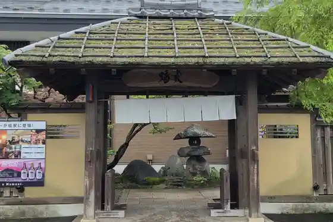
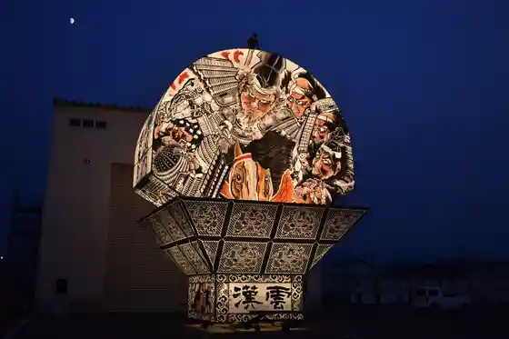
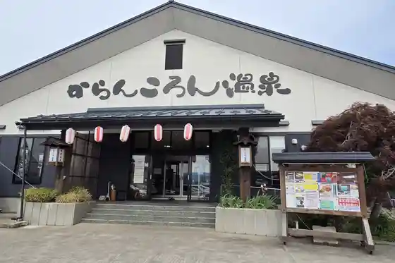
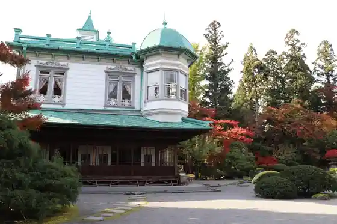

Roadside Station Ikarigaseki (Tsugaru Kan no Sho)
Hirakawa, Aomori · 0172-49-5020 · Official / source link
Tsugaru O no E Onsen Higaeri Yado Fukuya
Hirakawa, Aomori · 0172-55-0200 · Official / source link

Hirakawa Neputa Festival
Hirakawa, Aomori · 0172-44-3055 · Official / source link

Karankoron Onsen
Hirakawa, Aomori · 0172-44-4210 · Official / source link

Jo Misono
Hirakawa, Aomori · 0172-57-2020 · Official / source link

Hiroshi Minami Tetsudo Sharyokichi Kengaku Rasseru Kuruma Sosa Experience
Hirakawa, Aomori · Official / source link
Saruga Park
Hirakawa, Aomori · 0172-44-1111 · Official / source link
Saruga Shrine
Hirakawa, Aomori · 0172-57-2016 · Official / source link
Tsugaru Onsen
Hirakawa, Aomori · 0172-57-4511 · Official / source link
Hirakawa Neputa Tenjikan
Hirakawa, Aomori · 0172-44-1111 · Official / source link
Garden Oki Nakuri no Ki no Shita De
Hirakawa, Aomori · 0172-88-5529 · Official / source link
Ko Ken Yama Fudo In Kuni Uedera
Hirakawa, Aomori · 0172-45-2446 · Official / source link
Kashiwagi Onsen
Hirakawa, Aomori · 0172-44-7600 · Official / source link
Hirakawa Nature Forest
Hirakawa, Aomori · 090-5830-1821 · Official / source link
Tateda Onsen
Hirakawa, Aomori · 0172-44-8565 · Official / source link
Shiga Bo Forest Park
Hirakawa, Aomori · 0172-44-2941 · Official / source link
Kiyofuji Shi Shoin Garden
Hirakawa, Aomori · 0172-57-2127 · Official / source link
Biwa no Taira Gorufu Kurabu
Hirakawa, Aomori · 0172-55-2011 · Official / source link
Kon Kami no Shimizu
Hirakawa, Aomori · 0172-44-1111 · Official / source link
Sanchoku Center Hiraka
Hirakawa, Aomori · 0172-43-1831 · Official / source link
Ashige Sawa Onsen
Hirakawa, Aomori · 0172-44-0526 · Official / source link
Yuttari Hirakawa Kurashi Experience
Hirakawa, Aomori · 0172-40-2231 · Official / source link
Shiroiwa Forest Park
Hirakawa, Aomori · 0172-44-2611 · Official / source link
Mune Kata Shrine
Hirakawa, Aomori · 0172-57-2016 · Official / source link
Sekisho Museum
Hirakawa, Aomori · 0172-49-5020 · Official / source link
Tsugaru Kogen Gorufu Ba
Hirakawa, Aomori · 0172-44-4111 · Official / source link
Kashiwagi Hachiman Shrine
Hirakawa, Aomori · 0172-32-2407 · Official / source link
Hirakawa Local History Museum
Hirakawa, Aomori · 0172-44-1221 · Official / source link
Mikasa Yama Park
Hirakawa, Aomori · 0172-44-1111 · Official / source link
Ken Haru Sakurambo Sono
Hirakawa, Aomori · 0172-44-7420 · Official / source link
Saruga Yama Chomei In Shrine Tera
Hirakawa, Aomori · 0172-57-3182 · Official / source link
Koikoi Shrine
Hirakawa, Aomori · 0172-44-1111 · Official / source link
Yoshikawa Eiji Bungaku Hi
Hirakawa, Aomori · 0172-40-2231 · Official / source link
Riyaka Kendo
Hirakawa, Aomori · 0172-40-2231 · Official / source link